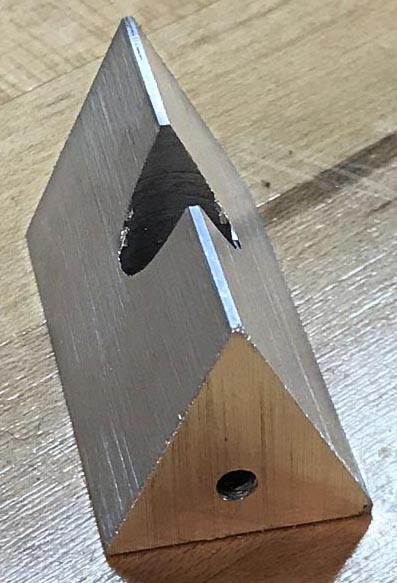

|
|
|
Pivot Jigs for Tormek SVM Knife Jigs |
There are a number of variations for this jig.

Collar Pivot Jig with the SVM-45 Knife Jig, version 1
The first version of this collar is shown on the right, and was published in 2018 on the Tormek forum by CB. It makes for easier sharpening of knives as it allows for easier pivoting of the knife jig when sharpening. It is especially useful for keeping a consistent grind on the edge, especially for blades with curves (as most have).
I use this jig for sharpening pruning shears, and it works well to allow for pivoting the knife jig along the blade's curved edge.

Pin Pivot Collar with the SVM-45 Knife Jig
Later in 2018, Rick Krung published on the Tormek forum an improvement to CB's design. This is shown in the 2nd picture on the right.
It is really quite nice, and has received (well-deserved) rave reviews, though it is a bit more involved to make as it requires a bit of machining and welding. I do like the simplicity of this approach, and the excellent work done by a great machinist.

 |

|
|
Wedge Pivot Collar |
|
Still later in 2018, Gord Cameron published on the Tormek forum a different approach which had simplicity in fabrication as its governing principle. This is shown in the pictures on the right.
Gord is not a machinist, and stated that he wanted something that could be made by anyone with a hack saw, a file, and a drill press. He also wanted to design something that someone could make out of plastic, either by shaping it or by using a 3D printer, so he designed it to have more reinforcing bulk than the pin pivot collar. (Editor's note: I've not been successful making one of these from plastic as even Delrin was too flexible.)
This enhancement is made from four 12mm collars (like 57485K69 from McMaster-Carr).
The two collars which seem joined, are actually held together by an M6-1.0 set screw (like 91390A126 from McMaster-Carr). That is a pivot point.
Martin Vinje-Dahl (Leapstep) put a 3D-printable model for printing a wedge pivot jig on Printables.com. You can access it at:
https://www.printables.com/model/188651-tormek-pivot-collar-12mm.